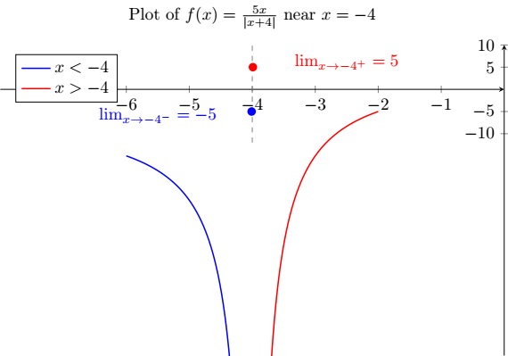

Example 2.3.1.
Solution.
convert modulus function in algebric function as
\begin{equation*}
\lvert{x+4}\rvert = \begin{cases}
x+4; & \text{for } x+4 \gt 0 \, \rightarrow x \gt -4 \\
-(x+4); & \text{for } x+4 \lt 0 \, \rightarrow x \lt -4 \\
\end{cases}
\end{equation*}
From left hand limit (LHL)
\begin{equation*}
= \lim_{x \to -4^-} \frac{5x}{-(x+4)} \, [Form: \frac{\#}{0}]
\end{equation*}
\begin{equation*}
= \lim_{x \to -4^-} \frac{5x}{-(x+4)} = \frac{-ve \,\#}{+ ve \,\#} = -ve \,\#.
\end{equation*}
Since, \(x \lt -4 \)
From right hand limit (RHL)
\begin{equation*}
= \lim_{x \to -4^+} \frac{5x}{(x+4)} \, [Form: \frac{\#}{0}]
\end{equation*}
\begin{equation*}
= \lim_{x \to -4^+} \frac{5x}{(x+4)} = \frac{-ve \,\#}{- ve \,\#} = +ve \,\#.
\end{equation*}
Since, \(x \gt -4 \text{.}\)
Hence, the limit does not exist as
\begin{equation*}
\lim_{x \to -4^-} \frac{5x}{\lvert{x+4}\rvert} \neq \lim_{x \to -4^+} \frac{5x}{\lvert{x+4}\rvert}.
\end{equation*}
